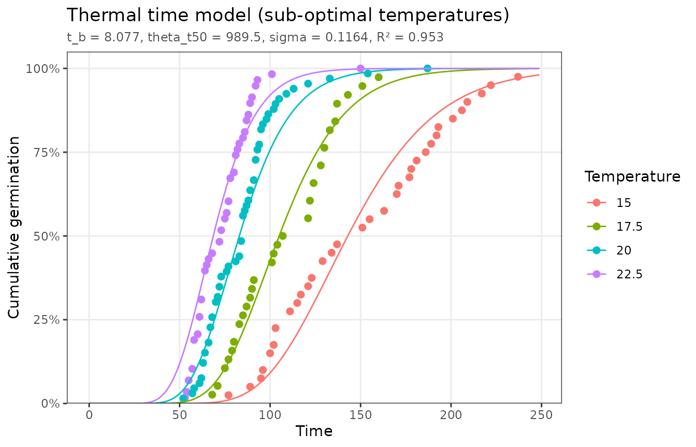
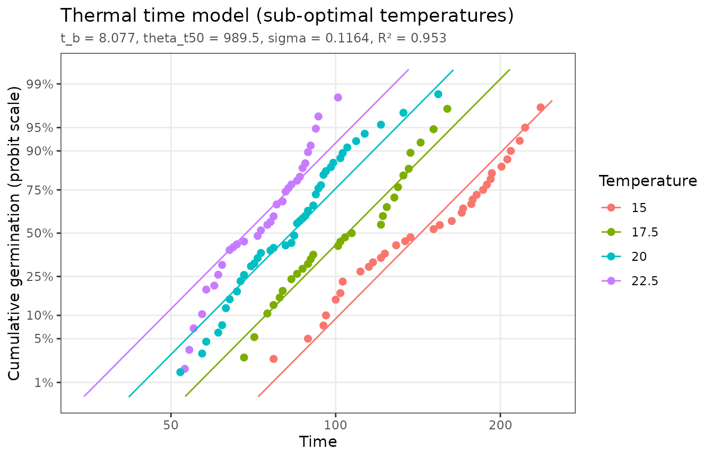
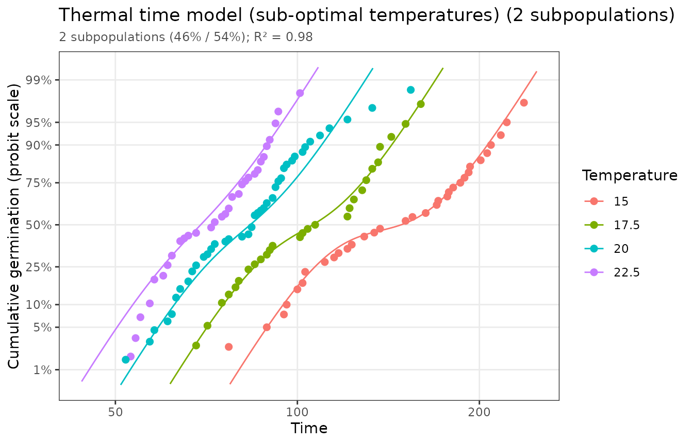

The threshold models assume that one normal distribution of thresholds describes the whole seed lot. That is often not true. Commercial lots are frequently blends of different productions, and conditions during seed development can leave seeds with different dormancy or vigor. A lot like this can be modeled as a mixture of distinct subpopulations, each with its own threshold distribution. Their germination, weighted by each subpopulation’s share of the lot, adds up to the observed time course (Bello and Bradford, 2016; Bradford and Bello, 2022). For two subpopulations:
where
is the factor (temperature, water potential, …) and
is the first subpopulation’s share. Every cumulative model in pbtm
(thermal time, hydrotime, hydrothermal time, aging, promoter, and
inhibitor) can be fit as a mixture with the subpops
argument.
A two-subpopulation seed lot
thermal_time_subpop_data comes from a lot that mixes two
subpopulations. A single thermal time distribution fits it reasonably
well on the usual scale:
single <- fit_thermal_time(thermal_time_subpop_data)
single
#> <pbtm_fit> Thermal time model
#>
#> t_b theta_t50 sigma
#> 8.077 989.5 0.1164
#>
#> n = 133, pseudo-R2 = 0.9526, AIC = -715.8
autoplot(single)
The linearized scale shows the problem. A single log-normal distribution would give a straight line at each temperature, but the data bend: the fast and slow subpopulations follow different lines.
autoplot(single, x_scale = "log", y_scale = "probit")
#> Dropped 2 points that cannot be shown on the log/probit axes (e.g. 0% or 100%
#> germination).
Fitting two subpopulations captures the bend:
mix <- fit_thermal_time(thermal_time_subpop_data, subpops = 2)
mix
#> <pbtm_fit> Thermal time model with 2 subpopulations
#>
#> component weight t_b theta_t50 sigma
#> 1 0.4636 5.261 1027 0.05914
#> 2 0.5364 9.322 1033 0.06085
#>
#> n = 133, pseudo-R2 = 0.9796, AIC = -820.2
autoplot(mix, x_scale = "log", y_scale = "probit")
#> Dropped 2 points that cannot be shown on the log/probit axes (e.g. 0% or 100%
#> germination).
mix$components has one row per subpopulation with its
share (weight) and parameters. The flat coefficients follow
the pattern t_b1, t_b2, …, with the free
mixing fractions named w1, w2, …
mix$components
#> # A tibble: 2 × 5
#> component weight t_b theta_t50 sigma
#> <int> <dbl> <dbl> <dbl> <dbl>
#> 1 1 0.464 5.26 1027. 0.0591
#> 2 2 0.536 9.32 1033. 0.0609Choosing the number of subpopulations
Adding subpopulations always improves the fit a little, so compare
fits with a criterion that penalizes the extra parameters.
subpops = "auto" fits one to max_subpops
subpopulations and keeps the one with the lowest AIC:
auto <- fit_thermal_time(thermal_time_subpop_data, subpops = "auto")
auto$subpop_table
#> # A tibble: 2 × 6
#> k npar pseudo_r2 rss aic delta_aic
#> <int> <dbl> <dbl> <dbl> <dbl> <dbl>
#> 1 1 3 0.953 0.576 -716. 104.
#> 2 2 7 0.980 0.247 -820. 0Here two subpopulations are clearly better than one (a difference in AIC of more than about 10 is strong evidence). A fit that fails to converge, as three subpopulations often do on data like these, is left out of the table.
Interpret with care
Mixture fits are often equifinal: quite different sets of component parameters can reproduce the same time course almost equally well. With only germination time courses to go on, a mixture can reliably show that a lot is not a single population and can improve predictions. The individual components’ parameters, and even the exact number of subpopulations, are much less certain. Some ways to firm them up:
- Collect time courses at more factor levels, which constrains the components much more than extra observations at the same levels.
- Hold parameters that should be shared by all components at known values. For example, estimate the base temperature from a single-population fit on a uniform lot.
- Check that the result is stable: a different
restartsvalue or a different subset of the treatments should give similar components. - Look for independent evidence of the subpopulations (seed size, source, dormancy tests).
Mixture fits start from several perturbed starting values
(restarts, 12 by default) and keep the best; these runs use
a fixed internal random seed, so results are reproducible and do not
affect your own random number stream.
References
Bello, P., Bradford, K.J. (2016) Single-seed oxygen consumption measurements and population-based threshold models link respiration and germination rates under diverse conditions. Seed Sci. Res. 26: 199–221. https://doi.org/10.1017/S0960258516000179
Bradford, K.J., Bello, P. (2022) Applying population-based threshold models to quantify and improve seed quality attributes. In J Buitink, O Leprince, eds, Advances in Seed Science and Technology for More Sustainable Crop Production. Burleigh Dodds Science Publishing, Cambridge, UK. https://doi.org/10.19103/AS.2022.0105.05